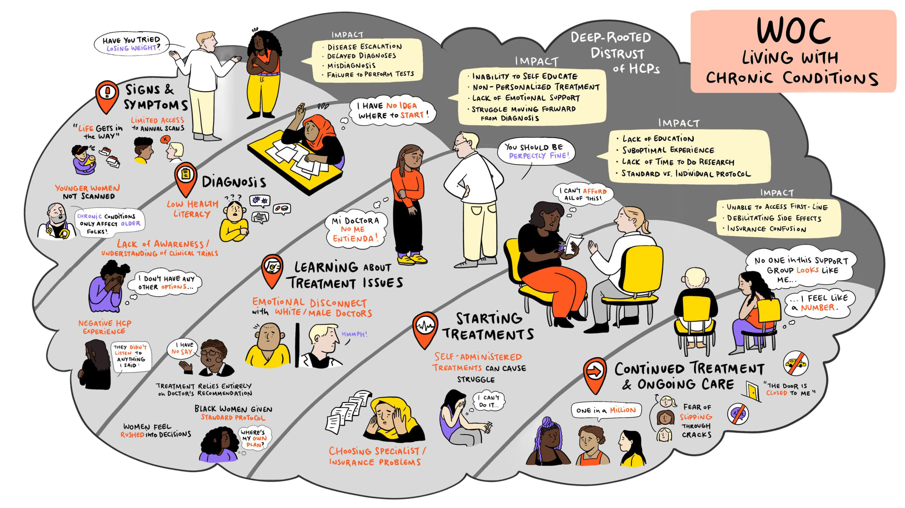
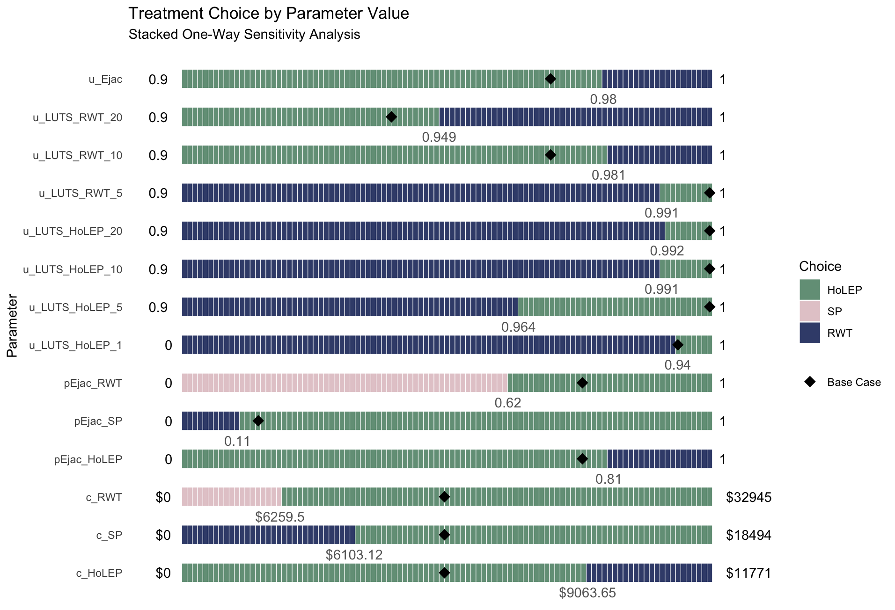
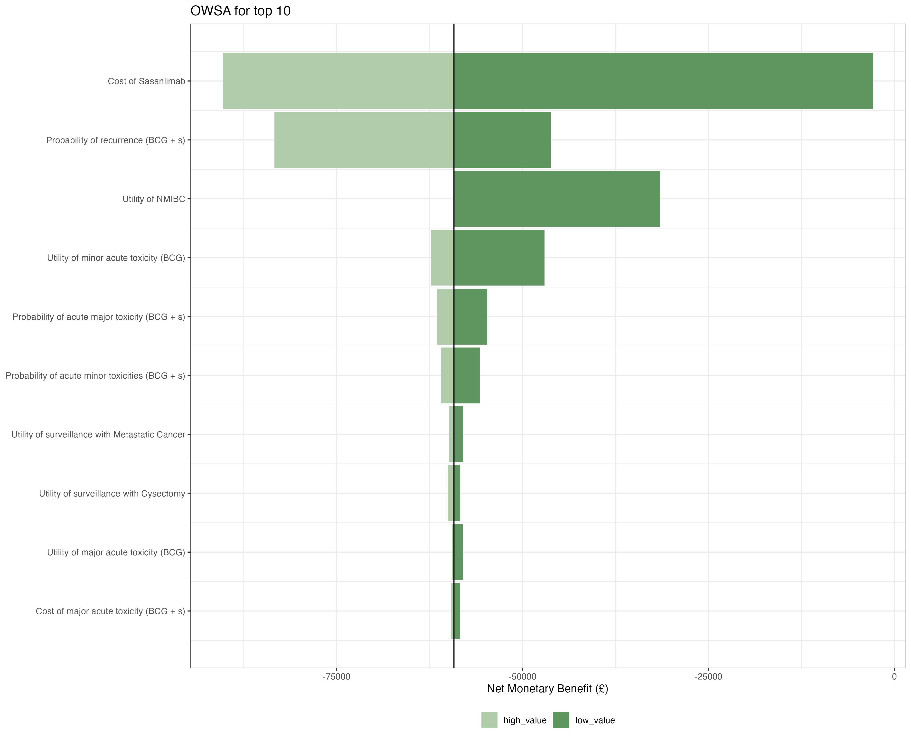
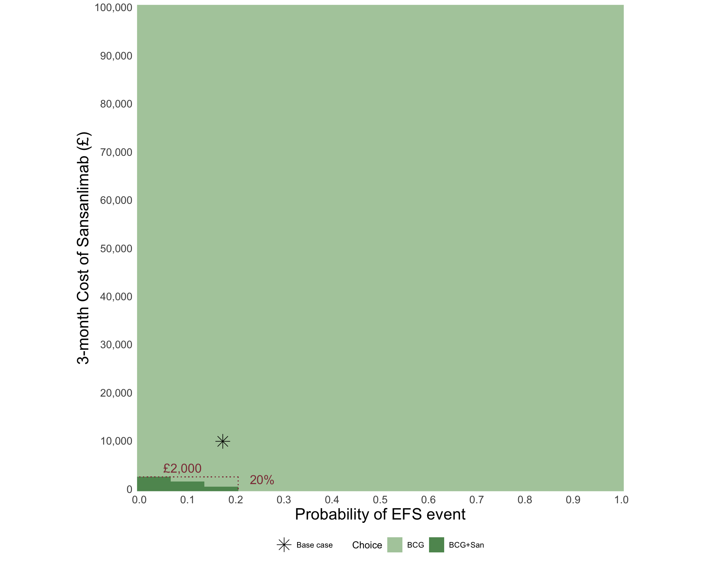
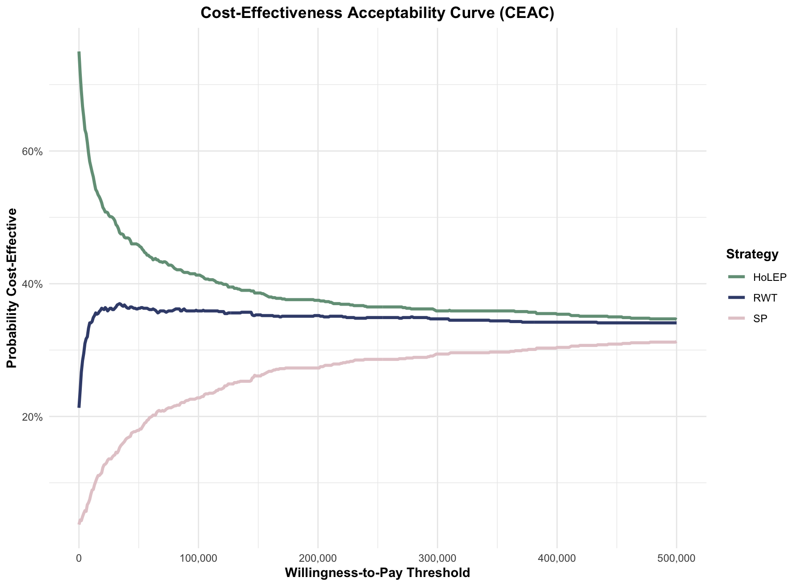

Template
2026-01-06
- Numbered Overview Template
(2) Section Divider Template
01
(3) Info Cards Template
Health State Definition
A health state represents a specific condition. Should be:
- Mutually exclusive
- Collectively exhaustive
- Clinically meaningful
Key Considerations
When defining states:
- Disease progression
- Treatment response
- Quality of life
- Cost implications
(4) Stats Grid Template
4
Health States
Including absorbing state
12
Transitions
Possible state changes
1 yr
Cycle Length
Annual transitions
20
Time Horizon
Years modeled
(5) Icon Bullets Template
- Health states are mutually exclusive
- Transitions must sum to 1.0
- Time cycle must be specified
- Clinical validation required
(6) Concept Grid Template
Disease-Free
Early Disease
Advanced Disease
Death
(7) Split Content Template
Patient Journey
- Initial diagnosis
- Treatment initiation
- Disease progression
- End-of-life care

Patient journey flowchart
(8) Simple Two Column Comparison Template
- Capture disease progression
- Handle uncertainty explicitly
- Allow probabilistic sensitivity analysis
- Incorporate time-dependent effects
- Memoryless assumption
- Computational complexity
- Data requirements
- Validation difficulties
(9) Comparison Table Template
Standard Care
- Lower upfront cost
- Established protocols
- Widely available
- Known side effects
New Treatment
- Higher efficacy
- Fewer side effects
- Better QoL outcomes
- Higher cost
Combination
- Best outcomes
- Complex protocol
- Highest cost
- Specialized care needed
(10) Definition Template
Markov Model
A mathematical model that represents a system where transitions between states occur with fixed probabilities, independent of the path taken to reach the current state (memoryless property).
Example:
A patient in the “Early Disease” state has a 0.15 probability of progressing to “Advanced Disease” each year, regardless of how long they’ve been in the early stage.
(11) Highlight Box Template
Key Takeaway
Markov models assume memoryless transitions - the probability of moving to the next state depends only on the current state, not on the history of previous states.
(11) Continued …. With Different Colors
Primary Highlight
This uses the primary blue color.
Secondary Highlight
This uses the secondary teal color.
(12) Image Grid Template [2x2]

Staked OWSA

Tornado Diagram (OWSA)

Two-Way Sensitvity

CEA from PSA
(12) Image Grid Template [3x3]
Healthy
Screening

Infected
Vaccinated
Symptomatic
Doctor vists
Treatment

Hospital
Die
(13) Process Flow Template
1
Literature Review
Review guidelines and models
2
Expert Consultation
Engage clinicians
3
Data Validation
Ensure data alignment
(14) Timeline Template
1
Define States
Identify health states
2
Create Diagram
Draw bubble diagram
3
Add Transitions
Define probabilities
4
Validate
Expert review
(15) Pros & Cons
- Clinically proven efficacy
- Well-tolerated by patients
- Lower cost per dose
- Easy administration
- Wide availability
- Requires frequent dosing
- Some drug interactions
- Not suitable for all patients
- Long-term safety uncertain
- Limited durability
The goal of health economic modeling is not to predict the future, but to inform better decisions in the present.
Milton Weinstein
Harvard School of Public Health
17
Big Number Template
Commonly used willingness-to-pay threshold per quality-adjusted life year (QALY) in the United States
(18) Checklist Template
Before Running Analysis
All health states defined
Transition probabilities validated
Cycle length specified
Time horizon determined
Discount rate selected
- Memoryless transitions
- Probabilistic modeling
- Time-based cycles
- Clinical validation
Questions?
Next Lecture: (20) Lecture Divider Slide
More Options
These aren’t working so please let me know if you fix them
chevron-accent- Double chevrons (top right)circle-accent- Large circle (bottom right)triangle-accent- Triangle (top left)rounded-rect-accent- Rounded rectangle (right side)quarter-circle-accent- Quarter circle (top right corner)half-circle-accent- Half circle (left side)diagonal-stripe-accent- Diagonal stripe pattern